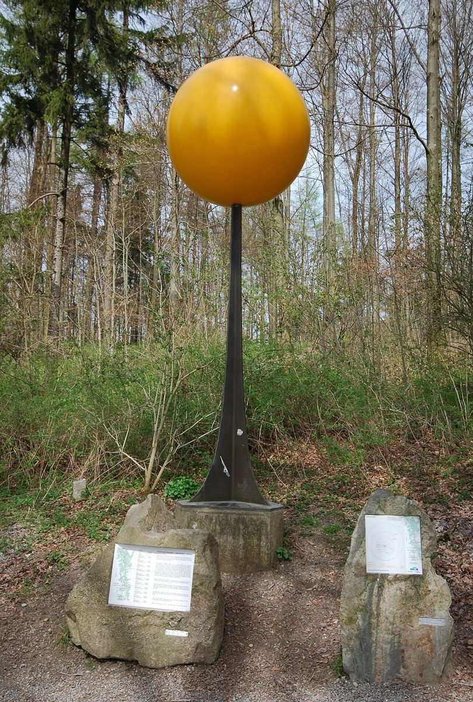
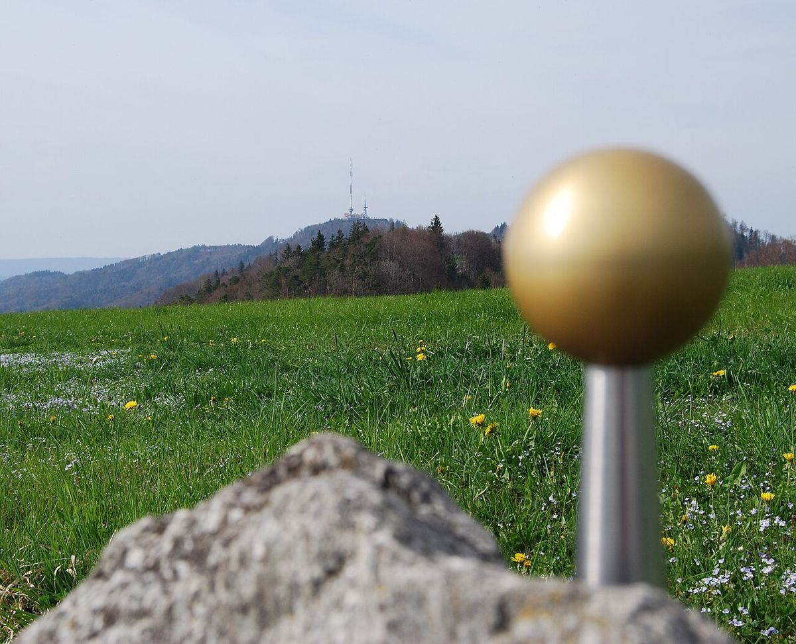
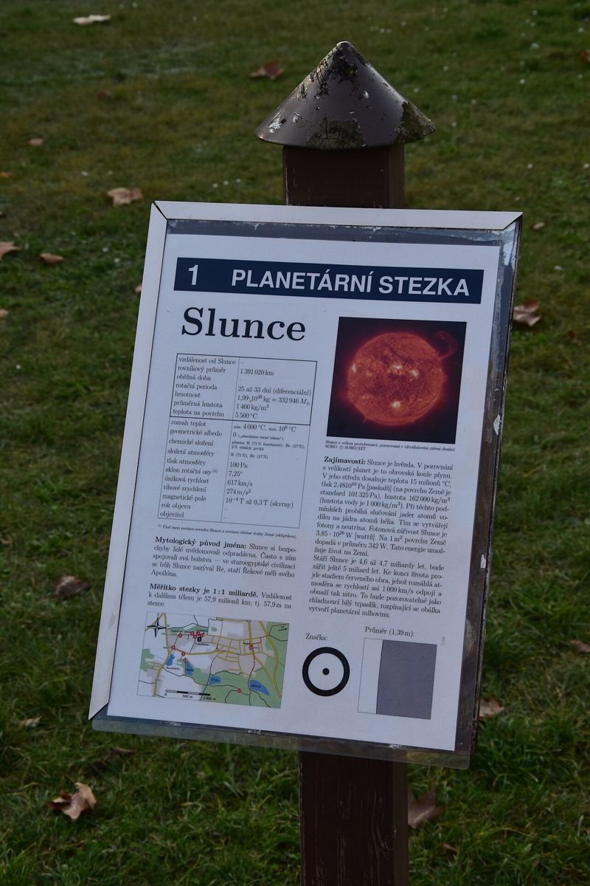
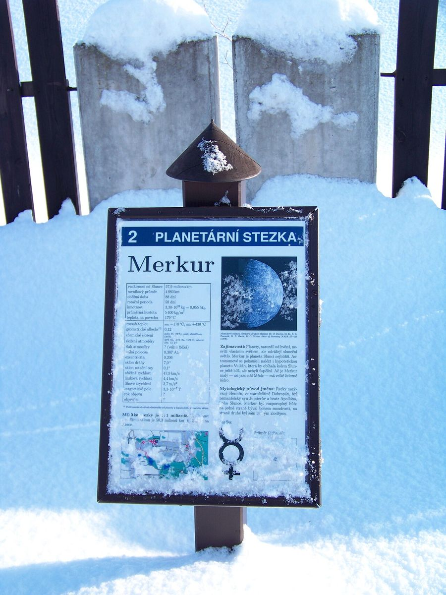
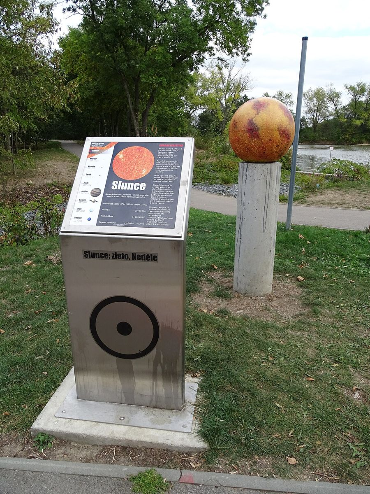
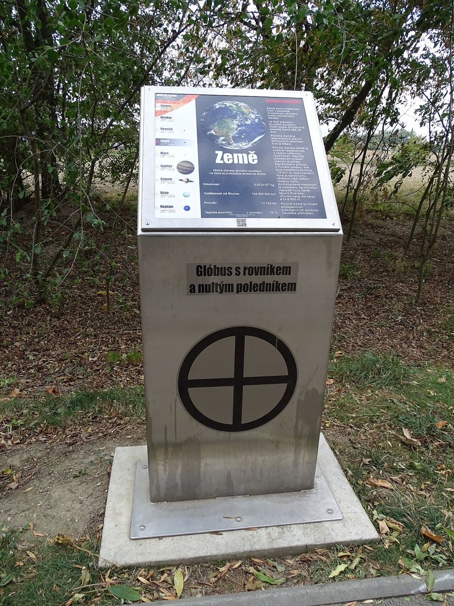

Sluneční soustava v Sobětuchách
Cílem je postavit model sluneční soustavy, s možností vytvořit naučnou stezku podél jednotlivých planet. Slunce bude stát v obci a planety po okolních cestách. Velikosti i vzdálenosti budou ve stejném měřítku.
V měřítku 1 : 1 miliarda má Slunce průměr 1,39 m. Země je kulička velikosti korálku, 150 m od Slunce, a Neptun stojí 4,5 km daleko. Při procházce tak člověk na vlastní nohy pozná, jak je sluneční soustava velká a hlavně prázdná. Stezka může sloužit škole, výletníkům i cyklistům.
- 1,39 mprůměr Slunce
- 12,8 mmZemě, 150 m od Slunce
- 4,5 kmvzdálenost Neptunu
Jak to dělají jinde
Stezky v podobném měřítku, kde Neptun leží asi 4,5 km od Slunce. Slunce bývá betonová nebo kovová koule, planety drobné modely na stojanech s informační tabulí.

Planetenweg Uetliberg, Curych
Slunce jako zlatá koule na stožáru u horní stanice lanovky.
Wikipedie (de) · Galerie na Commons
Foto: Micha L. Rieser, Wikimedia Commons, licence Attribution


Uetliberg: zastavení Neptun
Velké planety stojí na bludných balvanech, malé jsou zalité ve skle.
Foto: Micha L. Rieser, Wikimedia Commons, licence Attribution


Planetární stezka Hradec Králové
Slunce u hvězdárny, trasa vede kolem rybníků až k Plutu u lesního hřbitova.
Wikipedie · Galerie na Commons
Foto: Lukáš Nekolný, Wikimedia Commons, CC BY-SA 4.0


Hradec Králové: zastavení Merkur
Levné komunitní řešení: dřevo, tisk na bukové překližce, celá stezka za ~20 000 Kč.
Foto: ŠJů, Wikimedia Commons, CC BY-SA 3.0


Planetární stezka Vestec
Příklad z malé obce: kratší vycházka u rybníka, jen vnitřní planety.
Foto: ŠJů, Wikimedia Commons, CC BY 4.0


Vestec: zastavení Země
Jednotný stojan u všech těles drží stezku pohromadě.
Foto: ŠJů, Wikimedia Commons, CC BY 4.0

Kde by mohla planeta stát
Kružnice ukazují, jak daleko od Slunce musí stát jednotlivé planety. Planetu lze umístit kamkoli na její kružnici, třeba k cestě, lavičce nebo vyhlídce.
V mapě můžete posunout Slunce, změnit měřítko a zapínat jednotlivá tělesa.